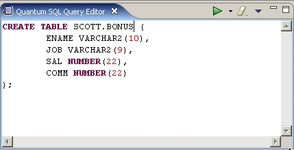
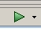
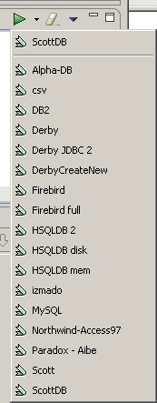
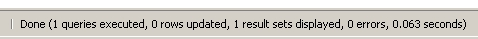
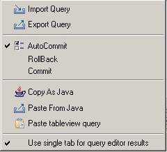
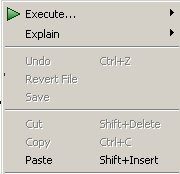

The SQL Query Editor is a view, not an editor in the Eclipse sense, so it won't appear mixed with the other editors in the editors zone of the workspace. However, you can use most of its functions in an editor, if you just edit a .sql or a .ddl file. More on that at the end of this page. Its function is allow the user to introduce and to edit SQL sentences and to execute them against the databases defined in Quantum. It looks like this when you have written something on it:

As you can see, the editor highlights some SQL syntax features. The colors of the highlighted text are selectable in the Quantum preferences.
When you want to execute your SQL query, you select the bookmark against which to execute using the  little black button near the green button (the execute button). When you click on it, a list of bookmarks appear for you to select. The currently selected appears above, separated from the rest by a line.
. 
If you simply hit the green execute button, the last selected bookmark will be used to execute against. That selected bookmark will also be shown as a window tip if you hover the mouse pointer over the execute button. This selected bookmark will change also if you double-click on a Recent Query on any bookmark (it will change to be the parent bookmark of the selected query). If the selected bookmark is not opened, Quantum will try to open it and execute the statement afterwards.
If your SQL statement return some results, the results will be displayed in the Quantum Table View.
You can write several queries, separated by semicolons. Quantum will send then one after another to the database JDBC driver to be executed. If you want to execute only one query or a part of them, you have the option to select the text and hitting the execute button. If there is something selected in the Query view, when the execute button is hit, only the selected text will be executed. You can also double-click on a character in the view, and that will automatically select its corresponding statement, limited by semicolons. Then you can execute it.
When you execute a query, the resulting status of the query and the time used, is displayed on the status bar of Eclipse. If the database reports any error, the message reported is displayed in a message box.

Next to the execute button, there is an "erase" button with an eraser icon on it . Pressing this button will clear the SQL Query view from all text.
At the right side of the toolbar, there is an expandable menu with some options.

You can Import a Query from an external file, and save (Export) one that you have written to a file. You can change your AutoCommit selection on the active bookmark, and execute a Rollback or a Commit, as convenience functions. Or course the rollback will do nothing if you have AutoCommit selected (the default). For more options on AutoCommit, see the Preferences Help.
The Copy As Java option will copy the existing text in the Query View and format it ready to be inserted as java code for the creation of a String. For example:
SELECT *
FROM "TEMP"
WHERE ID = 45
will be copied to the clipboard as :
"SELECT * " +
"FROM \"TEMP\" " +
"WHERE ID = 45 " ;
The next option Paste From Java tries to do the inverse of that
procedure. So if you have in the clipboard something like
"SELECT * " +
"FROM \"TEMP\" " +
"WHERE ID = 45 " ;
it'll paste into the Query View the string resulting from evaluating the java code (using the JavaBean interpreter). So it'll return
SELECT *
FROM "TEMP"
WHERE ID = 45
The option Paste tableview query will look at which tab is active
(displayed) in the Table View and will paste into the Query View the SELECT
used to generate that tab data.
The Use single tab for query editor results option allows you
to select if you want to reuse your tabs in the Table View (for repeated queries)
or rather generate a new one for each. Default is true.
If you edit an .SQL or .DDL file after installing Quantum, those extensions should launch an Editor based on the Query View. If you don't get it, that's possibly because some other plugin has broken the link. You can remake the link (or apply to other extensions) in Window->Preferences->General->FileAssociations.
Once you have open the file with the editor, the usual editor lifecycle applies, that is, your data is associated to a file, editors remain in place between Eclipse invocations, etc. Also, you'll be able to use many standard editor commands that you cannot use in the Query View, like Undo, or Search/Replace. You can execute your file by the context menu, selecting Execute, and then the bookmark.

The Editor does not allow you to change the AutoCommit property of the connection, so you have to remember which is it.